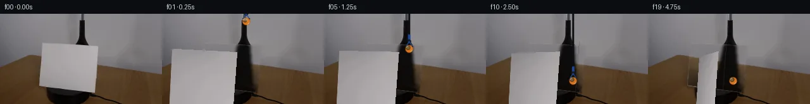
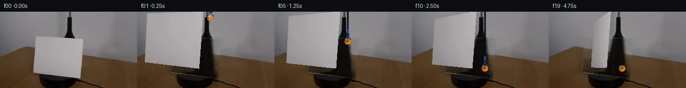
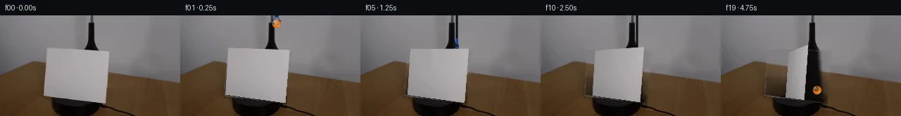
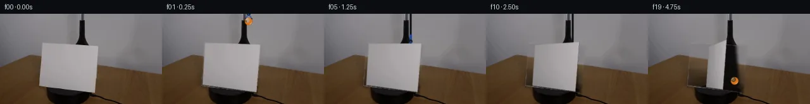
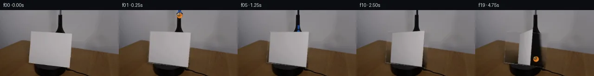
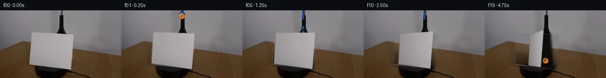
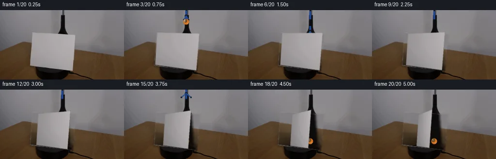
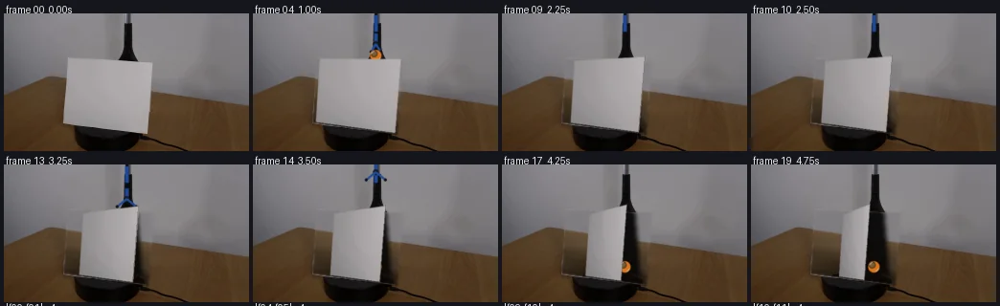

V0 · 初版
2026-11-04T22:17:35.241698+00:00 · RGB ce4adf15becd
![]()
Observable Generation Trace
把最终像素视频、Harness 冻结的每轮候选、真实工具事件和 Agent 自述放在同一页。可观测证据与模型自述分开标记，避免把“模型说它检查过”误当成真实工具调用。
![首帧]()
Static locked-off single-shot with fixed frame throughout filmed with constant framerate in real-time. The scene shows a realistic scientific demonstration. The scene only contains the described setup and actions. The blue-black grabber tool held the tennis ball above the cardstock and lowered it behind the cardstock. The cardstock sits on the black platform on top of a wooden table. The blue-black grabber tool places the orange tennis ball behind the clockwise-rotating cardstock on the table.
首帧显示在左侧播放器初始画面。Track 权限、隔离和 tensor 一致性来自 run manifest，而不是 METHOD.md。
默认勾选初版和最终版；可选其他版本一起同步播放。仅检查图更新的连续重复快照已合并，回退旧视频仍保留为一次修订。
Observable events
来源：events.jsonl + run manifest
此 Track 禁止读取输出图片。逐轮预览由外部 Harness 自动冻结，只用于事后审计，生成 Agent 当时看不到这些页面。
Frozen candidates
每张图来自该 round 的真实 00 / 01 / 05 / 10 / 19 帧

pixels 6bc85f89a4d965c6 · code dab2cef43f105789
--- previous/generate.py
+++ current/generate.py
@@ -0,0 +1,321 @@
+"""PixelWorld case_0006 generator.
+
+Local pixel pipeline (numpy + PIL only):
+ 1. Inpaint a clean background plate behind the measured cardstock quad.
+ 2. Rectify the cardstock from frame 0 into a flat RGBA texture (homography).
+ 3. Per frame: project the card with a clockwise yaw (right edge approaches
+ the camera), composite the blue-black grabber and orange tennis ball
+ behind it, reveal the resting ball as the sheet turns near edge-on.
+No external models, no network.
+"""
+from pathlib import Path
+import numpy as np
+from PIL import Image, ImageDraw, ImageFilter
+import artifact_io
+
+ROOT = Path(__file__).parent
+W, H = 256, 144
+N = 20
+SS = 4 # supersample factor for tool/ball layer
+
+# ---------------------------------------------------------------- geometry
+# Measured cardstock quad in frame 0.
+Q = np.array([[67., 47.], [155., 51.], [149., 125.], [63., 113.]]) # TL,TR,BR,BL
+PIVOT = np.array([108., 119.])
+WC, HC = 88., 74. # ideal sheet size at alpha = 0
+IDEAL0 = np.array([[64., 47.], [152., 47.], [152., 119.], [64., 119.]])
+F = D = 500.0 # pinhole constants (f == D keeps alpha=0 size)
+MAX_YAW = 72.0 # degrees over the 20 frames
+
+# Ball in card-plane coordinates: x right of pivot, z negative = behind sheet.
+BALL_X, BALL_Z, BALL_R = 22.0, -20.0, 6.0
+
+
+def homography(src, dst):
+ """3x3 homography mapping src points to dst points (4x2 arrays)."""
+ A = []
+ for (x, y), (u, v) in zip(np.asarray(src, float), np.asarray(dst, float)):
+ A.append([-x, -y, -1, 0, 0, 0, u * x, u * y, u])
+ A.append([0, 0, 0, -x, -y, -1, v * x, v * y, v])
+ _, _, Vt = np.linalg.svd(np.asarray(A))
+ M = Vt[-1].reshape(3, 3)
+ return M / M[2, 2]
+
+
+def warp_into(out_h, out_w, src, M_out_to_src):
+ """Bilinear warp. M_out_to_src maps output pixel coords -> src pixel coords."""
+ sh, sw = src.shape[:2]
+ ch = src.shape[2] if src.ndim == 3 else 1
+ src = src.reshape(sh, sw, ch)
+ out = np.zeros((out_h, out_w, ch), np.float32)
+ yy, xx = np.mgrid[0:out_h, 0:out_w]
+ g = np.stack([xx.ravel(), yy.ravel(), np.ones(out_h * out_w)])
+ uv = M_out_to_src @ g
+ uv = uv[:2] / uv[2]
+ u, v = uv[0], uv[1]
+ u0 = np.floor(u).astype(np.int32)
+ v0 = np.floor(v).astype(np.int32)
+ valid = (u0 >= 0) & (v0 >= 0) & (u0 < sw - 1) & (v0 < sh - 1)
+ du = (u - u0)[valid]
+ dv = (v - v0)[valid]
+ idx = (v0[valid] * sw + u0[valid]).astype(np.int64)
+ tflat = src.reshape(-1, ch).astype(np.float32)
+ a = tflat[idx]
+ b = tflat[idx + 1]
+ c = tflat[idx + sw]
+ d = tflat[idx + sw + 1]
+ top = a * (1 - du[:, None]) + b * du[:, None]
+ bot = c * (1 - du[:, None]) + d * du[:, None]
+ sampled = top * (1 - dv[:, None]) + bot * dv[:, None]
+ out.reshape(-1, ch)[valid] = sampled
+ return out if src.ndim == 3 else out[..., 0]
+
+
+def warp_texture(tex, M_tex_to_canvas):
+ """Warp a small RGBA texture onto the H x W canvas (M: texture -> canvas)."""
+ return warp_into(H, W, tex, np.linalg.inv(M_tex_to_canvas))
+
+
+# ----------------------------------------------------- background plate
+def build_background(first):
+ """Fill only the card quad in frame 0 with plausible wall/table/stand/base."""
+ mask = Image.new('L', (W, H), 0)
+ ImageDraw.Draw(mask).polygon([tuple(p) for p in Q], fill=255)
+ mask = mask.filter(ImageFilter.MaxFilter(3)) # cover the seam
+ alpha = np.asarray(mask.filter(ImageFilter.GaussianBlur(1.0))).astype(np.float32) / 255
+
+ layer = np.zeros((H, W, 3), np.float32)
… diff truncated; 234 more lines …
pixels ccf50fe72ef5c920 · code bfbe9c06a845d3e3
--- previous/generate.py
+++ current/generate.py
@@ -27,8 +27,10 @@
F = D = 500.0 # pinhole constants (f == D keeps alpha=0 size)
MAX_YAW = 72.0 # degrees over the 20 frames
-# Ball in card-plane coordinates: x right of pivot, z negative = behind sheet.
-BALL_X, BALL_Z, BALL_R = 22.0, -20.0, 6.0
+# Ball in world coordinates relative to pivot: x right, z toward camera,
+# so z negative = behind the sheet. Ball stays fixed once placed (on the table).
+BALL_X, BALL_Z, BALL_R = 30.0, -20.0, 6.0
+BALL_SX = PIVOT[0] + F * BALL_X / (D - BALL_Z) # constant screen x ≈ 136.8
def homography(src, dst):
@@ -170,18 +172,11 @@
a = np.deg2rad(deg)
ca, sa = np.cos(a), np.sin(a)
corners = []
- for (X, v) in [(-WC / 2, 0), (WC / 2, 0), (WC / 2, 1), (-WC / 2, 1)]:
+ # v=1 -> top edge (pivot - HC), v=0 -> bottom edge (at pivot height)
+ for (X, v) in [(-WC / 2, 1), (WC / 2, 1), (WC / 2, 0), (-WC / 2, 0)]:
s = F / (D - X * sa)
corners.append([PIVOT[0] + s * X * ca, PIVOT[1] - s * HC * v])
return np.array(corners)
-
-
-def project_ball(deg):
- """Screen x of the ball's fixed world point at a given yaw."""
- a = np.deg2rad(deg)
- Xp = BALL_X * np.cos(a) - BALL_Z * np.sin(a)
- Zp = BALL_X * np.sin(a) + BALL_Z * np.cos(a)
- return PIVOT[0] + F * Xp / (D - Zp)
# ----------------------------------------------------- tool / ball layer
@@ -257,11 +252,8 @@
frame = bg.copy()
- # ball screen x: 2-D hold above the card, 3-D once it goes behind
- if t <= 4:
- bx = 133.0
- else:
- bx = project_ball(deg)
+ # ball rests at a fixed table position; the tool follows it down
+ bx = BALL_SX
by = float(ball_y[t])
# claw position / state
@@ -269,13 +261,13 @@
claw = (bx, by - 12)
opened = False
elif t == 11:
- claw = (project_ball(deg), 86); opened = True
+ claw = (bx, 86); opened = True
elif t == 12:
- claw = (project_ball(deg), 62); opened = True
+ claw = (bx, 62); opened = True
elif t == 13:
- claw = (project_ball(deg), 36); opened = True
+ claw = (bx, 36); opened = True
elif t == 14:
- claw = (project_ball(deg), 8); opened = True
+ claw = (bx, 8); opened = True
else:
claw = None; opened = True
pixels ccf50fe72ef5c920 · code bfbe9c06a845d3e3
No generate.py text change in this frozen round.

pixels 54dffc86e9b5bbcf · code a4ccce8735b8e127
--- previous/generate.py
+++ current/generate.py
@@ -240,6 +240,12 @@
Hcal = homography(IDEAL0, Q) # camera-perspective calibration
rect = np.array([[0., 0.], [119., 0.], [119., 106.], [0., 106.]])
+ def apply_H(M, pts):
+ pts = np.asarray(pts, float)
+ g = np.hstack([pts, np.ones((len(pts), 1))])
+ w = (M @ g.T).T
+ return w[:, :2] / w[:, 2:]
+
# ball y keyframes (None = absent); x comes from the 3D projection
ball_y = [None, 12, 24, 34, 44, 56, 68, 80, 92, 102, 107] + [107] * 9
frames = []
@@ -282,8 +288,8 @@
tex = card0.copy()
tex[..., :3] *= shade[..., None]
qideal = project_corners(deg)
- Hideal = homography(IDEAL0, qideal)
- Htot = Hcal @ Hideal
+ qscreen = apply_H(Hcal, qideal)
+ Htot = homography(rect, qscreen)
warped = warp_texture(tex, Htot) # RGBA float
ca = warped[..., 3:4] / 255
frame = frame * (1 - ca) + warped[..., :3] * ca
@@ -292,12 +298,8 @@
if deg > 12:
edge = Image.new('L', (W, H), 0)
ed = ImageDraw.Draw(edge)
- p = qideal
- # map ideal corners through calibration for screen endpoints
- pts = []
- for x, y in [p[1], p[2]]:
- v = Hcal @ np.array([x, y, 1.0]); v /= v[2]; pts.append((v[0], v[1]))
- ed.line(pts, fill=int(120 * min(1, (deg - 12) / 25)), width=1)
+ ed.line([tuple(qscreen[1]), tuple(qscreen[2])],
+ fill=int(120 * min(1, (deg - 12) / 25)), width=1)
ea = np.asarray(edge).astype(np.float32)[..., None] / 255
frame = frame * (1 - ea * 0.6) + np.array([70., 68., 70.]) * ea * 0.6

pixels a9e0e4859fdd65ce · code 5860823b2f832363
--- previous/generate.py
+++ current/generate.py
@@ -73,9 +73,13 @@
return out if src.ndim == 3 else out[..., 0]
-def warp_texture(tex, M_tex_to_canvas):
- """Warp a small RGBA texture onto the H x W canvas (M: texture -> canvas)."""
- return warp_into(H, W, tex, np.linalg.inv(M_tex_to_canvas))
+def warp_texture(tex, M_tex_to_canvas, ss=2):
+ """Warp a small RGBA texture onto the H x W canvas (M: texture -> canvas).
+ Rendered at `ss`x resolution then area-averaged down to kill texture crawl."""
+ S = np.diag([ss, ss, 1]).astype(float)
+ hi = warp_into(H * ss, W * ss, tex, np.linalg.inv(S @ M_tex_to_canvas))
+ img = Image.fromarray(np.uint8(np.clip(hi, 0, 255))).resize((W, H), Image.BILINEAR)
+ return np.asarray(img).astype(np.float32)
# ----------------------------------------------------- background plate
@@ -284,7 +288,7 @@
# --- card: shade the rectified texture, warp through yaw + calibration
a = np.deg2rad(deg)
u = np.linspace(0, 1, 120)[None, :]
- shade = (1 - np.sin(a)) * 1.02 + np.sin(a) * (0.86 + 0.16 * u)
+ shade = (1 - np.sin(a)) + np.sin(a) * (0.84 + 0.18 * u)
tex = card0.copy()
tex[..., :3] *= shade[..., None]
qideal = project_corners(deg)pixels a9e0e4859fdd65ce · code 5860823b2f832363
No generate.py text change in this frozen round.

pixels 51ec046f14ba96c8 · code e6b13afd0e37ceaa
--- previous/generate.py
+++ current/generate.py
@@ -29,8 +29,8 @@
# Ball in world coordinates relative to pivot: x right, z toward camera,
# so z negative = behind the sheet. Ball stays fixed once placed (on the table).
-BALL_X, BALL_Z, BALL_R = 30.0, -20.0, 6.0
-BALL_SX = PIVOT[0] + F * BALL_X / (D - BALL_Z) # constant screen x ≈ 136.8
+BALL_X, BALL_Z, BALL_R = 24.0, -20.0, 6.0
+BALL_SX = PIVOT[0] + F * BALL_X / (D - BALL_Z) # constant screen x ≈ 131.1
def homography(src, dst):
@@ -210,8 +210,8 @@
else:
ends = [(cx - 5 * SS, by * SS - 4 * SS), (cx + 5 * SS, by * SS - 4 * SS)]
for ex, ey in ends:
- d.line([(ccx, ccy), (ex, ey)], fill=(34, 78, 158, 255), width=5)
- d.ellipse((ex - 4, ey - 4, ex + 4, ey + 4), fill=(16, 18, 26, 255))
+ d.line([(ccx, ccy), (ex, ey)], fill=(34, 78, 158, 255), width=10)
+ d.ellipse((ex - 6, ey - 6, ex + 6, ey + 6), fill=(16, 18, 26, 255))
# ball
if by is not None and -BALL_R < by < H + BALL_R:
@@ -227,7 +227,7 @@
d.arc((cxx - rr + 3, cyy - rr + 3, cxx + rr - 3, cyy + rr - 3), 200, 252, fill=(238, 226, 198, 220), width=3)
d.arc((cxx - rr + 3, cyy - rr + 3, cxx + rr - 3, cyy + rr - 3), 18, 72, fill=(238, 226, 198, 220), width=3)
# contact shadow under a resting ball
- if claw is None or open_prongs:
+ if by >= 107:
sy = int((by + BALL_R - 0.5) * SS)
sdr.ellipse((cxx - 7 * SS, sy - 2 * SS, cxx + 8 * SS, sy + 2 * SS), fill=(10, 7, 4, 70))
pixels 51ec046f14ba96c8 · code 4d26dee5c5128587
--- previous/generate.py
+++ current/generate.py
@@ -311,9 +311,35 @@
frames = np.stack(frames)
assert frames[0].tobytes() == first.tobytes(), 'frame 00 must equal first_frame.png'
+ write_transition_check(frames)
artifact_io.save(frames, ROOT)
return frames
+def write_transition_check(frames):
+ """Contact sheet: key frames on top, amplified adjacent diffs below."""
+ keys = [0, 4, 9, 10, 13, 14, 17, 19]
+ pad, label_h = 4, 10
+ cell_w, cell_h = W, H + label_h
+ sheet = Image.new('RGB', (cell_w * 4 + pad * 5, cell_h * 2 + pad * 3), (20, 22, 28))
+ dr = ImageDraw.Draw(sheet)
+ for i, t in enumerate(keys):
+ col, row = i % 4, i // 4
+ x = pad + col * (cell_w + pad)
+ y = pad + row * (cell_h + pad)
+ dr.text((x + 2, y), f'frame {t:02d} {t/4:.2f}s', fill=(235, 235, 235))
+ sheet.paste(Image.fromarray(frames[t]), (x, y + label_h))
+ # second strip: amplified |delta| between pairs that bracket each event
+ pairs = [(0, 1), (4, 5), (9, 10), (10, 11), (12, 13), (14, 15), (16, 17), (18, 19)]
+ for i, (a, b) in enumerate(pairs):
+ col, row = i % 4, i // 4
+ x = pad + col * (cell_w + pad)
+ y = pad + 2 * cell_h + pad + row * (cell_h + pad)
+ diff = np.clip(np.abs(frames[b].astype(int) - frames[a].astype(int)) * 4, 0, 255).astype(np.uint8)
+ dr.text((x + 2, y), f'|f{a:02d}-f{b:02d}| x4', fill=(235, 235, 235))
+ sheet.paste(Image.fromarray(diff), (x, y + label_h))
+ sheet.save(ROOT / 'transition_check.png')
+
+
if __name__ == '__main__':
main()
pixels bc4e0a0fc529eb1b · code aba58219254cbe4f
--- previous/generate.py
+++ current/generate.py
@@ -29,8 +29,8 @@
# Ball in world coordinates relative to pivot: x right, z toward camera,
# so z negative = behind the sheet. Ball stays fixed once placed (on the table).
-BALL_X, BALL_Z, BALL_R = 24.0, -20.0, 6.0
-BALL_SX = PIVOT[0] + F * BALL_X / (D - BALL_Z) # constant screen x ≈ 131.1
+BALL_X, BALL_Z, BALL_R = 21.3, -20.0, 6.0
+BALL_SX = PIVOT[0] + F * BALL_X / (D - BALL_Z) # constant screen x ≈ 128.5
def homography(src, dst):
@@ -201,6 +201,9 @@
ccx, ccy = ccx * SS, ccy * SS
# black rod from frame top to collar
d.line([(ccx, 0), (ccx, ccy)], fill=(12, 13, 19, 255), width=3 * SS)
+ # blue grip sleeve on the upper rod (keeps the blue-black tool
+ # identifiable even while the claw is hidden behind the card)
+ d.line([(ccx, 2 * SS), (ccx, 19 * SS)], fill=(30, 72, 150, 255), width=4 * SS)
# blue collar grip
d.line([(ccx, ccy - 11 * SS), (ccx, ccy)], fill=(30, 72, 150, 255), width=4 * SS)
d.ellipse((ccx - 3 * SS, ccy - 3 * SS, ccx + 3 * SS, ccy + 3 * SS), fill=(24, 26, 34, 255))Final visual checks
Harness 保存的最终产物


Agent claims
以下文字由生成 Agent 撰写，不等同于工具证据
first_frame.png: 256×144 RGB. Smooth, softly-blurred capture (mean neighbor luminance diff on wall ≈ 0.5/255), slight film grain.first_frame.png.Blue-black grabber tool holds an orange tennis ball above the cardstock, lowers it behind the clockwise-rotating cardstock, releases it on the table behind the sheet, and withdraws. The cardstock rotates clockwise (yaw about the vertical turntable axis, seen from the camera); as it turns toward edge-on, the resting ball is revealed beside the sheet's leading edge.
| t | α° | ball / tool |
|---|---|---|
| 00 | 0 | Identical to first_frame.png; no tool/ball. |
| 01 | 3.8 | Rod+claw enter from top; orange ball at ≈(128.5,12). |
| 02 | 7.6 | Ball descends to y24, held above card. |
| 03 | 11.4 | Ball y34. |
| 04 | 15.2 | Ball y44, just above the card's top edge. |
| 05 | 18.9 | Ball y56, partially occluded as it passes behind top edge. |
| 06 | 22.7 | Ball y68 behind card (hidden), tool still gripping. |
| 07 | 26.5 | Ball y80. |
| 08 | 30.3 | Ball y92. |
| 09 | 34.1 | Ball y102, reaching table. |
| 10 | 37.9 | Ball rests at y107; claw opens, release. |
| 11 | 41.7 | Empty claw rises (y≈86), prongs open. |
| 12 | 45.5 | Claw y≈62; ball still fully hidden. |
| 13 | 49.3 | Claw y≈36; ball hidden. |
| 14 | 53.1 | Claw y≈8 exiting; ball hidden (edge at ball rim). |
| 15 | 56.8 | Tool gone; first small sliver of ball appears. |
| 16 | 60.6 | Sliver widens. |
| 17 | 64.4 | About half the ball visible. |
| 18 | 68.2 | Most of the ball visible. |
| 19 | 72 | Card near edge-on; ball nearly fully visible resting behind it. |
artifact_io.py; write transition_check.png; verify PNGs decode to the uint32 0xRRGGBB tensor and frame 00 equality.All 20 frames are generated by generate.py using only local numpy + Pillow
pixel operations (drawing, homography warps, bilinear sampling, analytic
shading). No external models, engines, network calls or reference images are
used. Frame 00 is copied byte-for-byte from first_frame.png.
first_frame.png, documented in OBSERVATION.md)A replacement plate is built for the region covered by the card, using the measured wall gradient (with a soft stand shadow), a wood table below the sampled horizon polyline (depth gradient + low-frequency grain/bands), the dark gooseneck continuation (soft-edged trapezoid), the turntable ellipse and cylinder, and a faint front-rim highlight. The plate is blended into frame 0 only inside the card quad through a ~1 px feathered mask; everything else is untouched.
background plate → grabber + ball → rotating card (with alpha) → card edge line. This makes every descent/reveal occlusion correct without masks.
pixels.npz stores the uint32 0xRRGGBB tensor (144×256×20); frames/00–19.png,
inspection.png (artifact_io.py) and index.html (standalone delta player).transition_check.png: key frames 00,04,09,10,13,14,17,19 plus 4× amplified
adjacent-frame difference panels for the entry, passing-behind, release,
tool-exit and reveal transitions..tmp/verify.py checks numerically (no image viewing): PNGs decode exactly
to the tensor; frame 00 is byte-identical to first_frame.png; card width
shrinks monotonically; ball visible-above → hidden → monotonically revealed;
tool present then absent; per-frame mean deltas stay in a smooth band with no
frozen or explosive frames; all required artifacts exist.